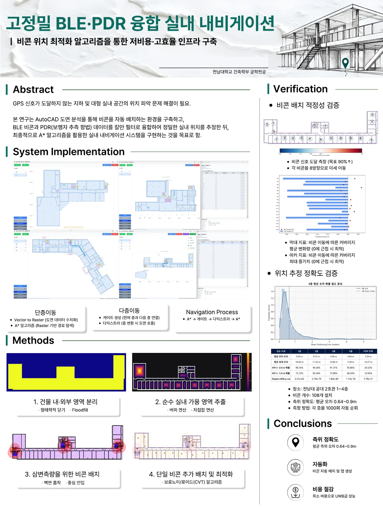
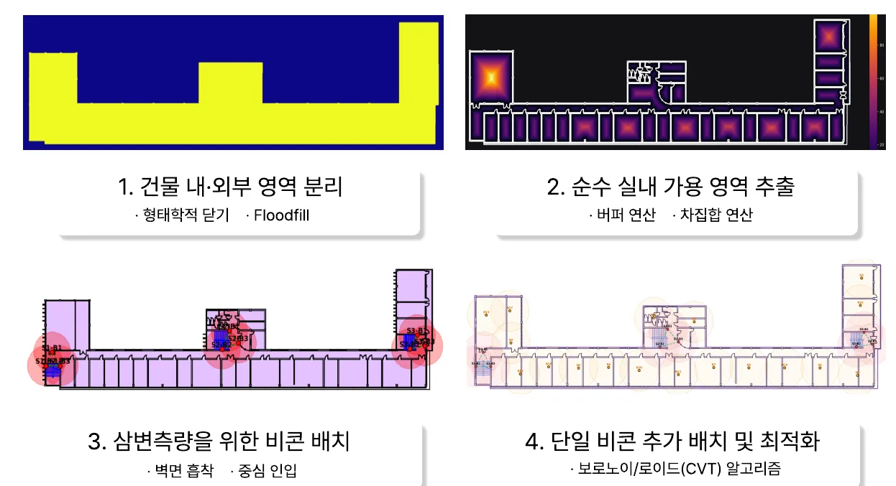

연구
고정밀 BLE·PDR 융합 실내 내비게이션
비콘 위치 최적화 알고리즘을 통한 저비용·고효율 인프라 구축
- 과목·기간
- 건축공학종합설계 1 (캡스톤 디자인 1) · 2026년 1학기 (2026.03 ~ 2026.06)
- 개인/팀
- 3인 팀 프로젝트
- 내 역할
- 비콘 자동 배치 — 삼변측량용 3-비콘 세트 배치, 벽면 스냅 적용
- 수상
- 이 연구로 2026 건축학부 졸업작품전 우수상(전남대학교 공과대학장상), 제23회 전남광주통합특별시 건축도시문화제 학생우수작품상(전남광주통합특별시장상)을 받았습니다. 수상 페이지 보기 →
연구 개요


계기
시공 현장 지하에서 길을 찾지 못하고 현재 위치조차 알기 어려웠던 경험에서 출발했습니다.
문제
- GPS가 닿지 않는 대형·복합 건물 안에서는 별도의 실내 측위 장비가 필요합니다.
- 상용 솔루션(UWB·LiDAR)은 장비 단가가 20~50만 원으로 비싸 소규모 건물에 쓰기 어렵습니다.
- 비콘을 사람이 직접 계산해 배치하면 대량 배치가 어렵고 품질이 들쭉날쭉합니다.
검증
전남대학교 공과대학 2호관 1~4층에서 층마다 1,000회 자동 순회했습니다.
결과
1 m 미만전 층 평균 오차
98% 이상2 m 이내 달성률
약 90%PDR 단독 대비 오차 감소
비용 절감저가 BLE 비콘만으로 상용 솔루션 대비 구축 비용 절감
방법
도면만 넣으면 비콘 배치부터 경로 안내까지 자동으로 진행합니다.

- 건물 내·외부 영역 분리CAD(DXF) 도면을 격자로 바꾸고 Floodfill로 실내를 구분합니다.
- 순수 실내 가용 영역 추출벽·기둥을 빼서 사람이 다니고 비콘을 달 수 있는 영역만 남깁니다.
- 삼변측량용 3-비콘 세트 배치벽면 흡착(Wall Snapping)과 중심 방향 인입으로 배치합니다.
- 단일 비콘 추가와 최적화음영 지역에 비콘을 더하고 보로노이/로이드(CVT)로 고르게 분산합니다.
- 측위와 경로 안내BLE와 스마트폰 PDR(보행 추측항법)을 칼만 필터로 융합하고, 래스터 A*·층간 게이트로 경로를 안내합니다.